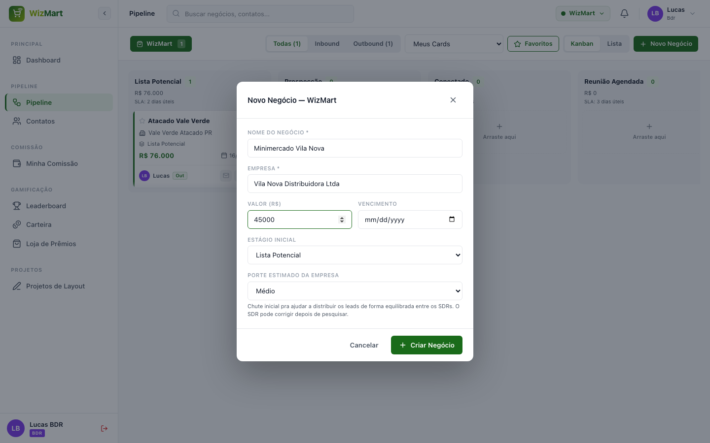

Este guia é para o BDR — quem gera os leads e os coloca a caminho da fila do SDR. Leia primeiro o Guia Rápido para login, navegação e gamificação.
Acesse e clique em Novo Negócio.
O porte estimado alimenta a distribuição automática e a atribuição manual de SDRs — o sistema tenta equilibrar a carteira de cada SDR por porte de cliente, não só pela quantidade total de cards.

Acesse → Novo Contato. Contatos são a agenda de pessoas de cada empresa — o mesmo contato pode se vincular a mais de um negócio.
No , arraste o card de uma coluna para outra para avançar a etapa. Alguns estágios pedem uma informação extra antes de aceitar o card:
Cada negócio registra automaticamente quem o trabalhou: você (BDR) cria o card; ao passar para o SDR, fica registrado; ao passar para o Representante, idem. São essas assinaturas que definem entre quem a comissão será dividida.
Normalmente a distribuição para os SDRs acontece automaticamente todo dia às 7h. Mas se um SDR está com a fila do dia zerada e disponível para mais cards, você pode atribuir na hora:
Essa atribuição manual é um "extra" — não substitui nem reduz a cota automática de novos cards que o SDR recebe no dia seguinte.
Disponível em negócios WizMart Minimercado. Dentro do card, clique em Solicitar Projeto de Layout e preencha os 3 passos:
Ao enviar, o pedido entra na Fila de Projetos do time de Design, por ordem de chegada.
Acesse para ver só a sua fatia de cada negócio comissionado — você não vê o valor total do card nem a fatia de outros colegas.
No modelo padrão, o BDR recebe 2% do faturamento em todos os negócios em que participou — inclusive no modelo especial da Máquina de Café (72% total).
Acompanhe seu saldo em e troque por prêmios em . Veja seu lugar no ranking em . Detalhes de como moedas e streak funcionam estão no Guia Rápido.
| Termo | O que significa |
|---|---|
| Porte estimado | Seu chute inicial sobre o tamanho do cliente (P/M/G) — usado para equilibrar a carteira dos SDRs. |
| Assinaturas do card | Registro de quem trabalhou o negócio (BDR, SDR, Rep) — base da divisão da comissão. |
| Fila do SDR | Cards distribuídos automaticamente todo dia às 7h para cada SDR trabalhar. |